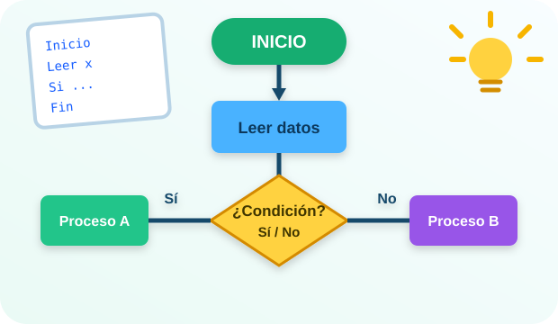

UNIDAD I
Metodología para la solución de problemas
Análisis, entradas, procesos, salidas, algoritmos y pruebas.
Aprende a analizar problemas y transformarlos en soluciones lógicas mediante algoritmos.
“Antes de programar una solución, hay que aprender a pensar el problema.”

Explora las unidades, consulta el material y practica con ejemplos.
Análisis, entradas, procesos, salidas, algoritmos y pruebas.
Operadores aritméticos, relacionales, lógicos y jerarquía.
Selección simple, doble, anidada y múltiple.
Para, Mientras, Repetir, contadores y banderas.
Arreglos, vectores, matrices y cadenas.
Referencias y material adicional.
Ejemplos, algoritmos y prácticas del curso.